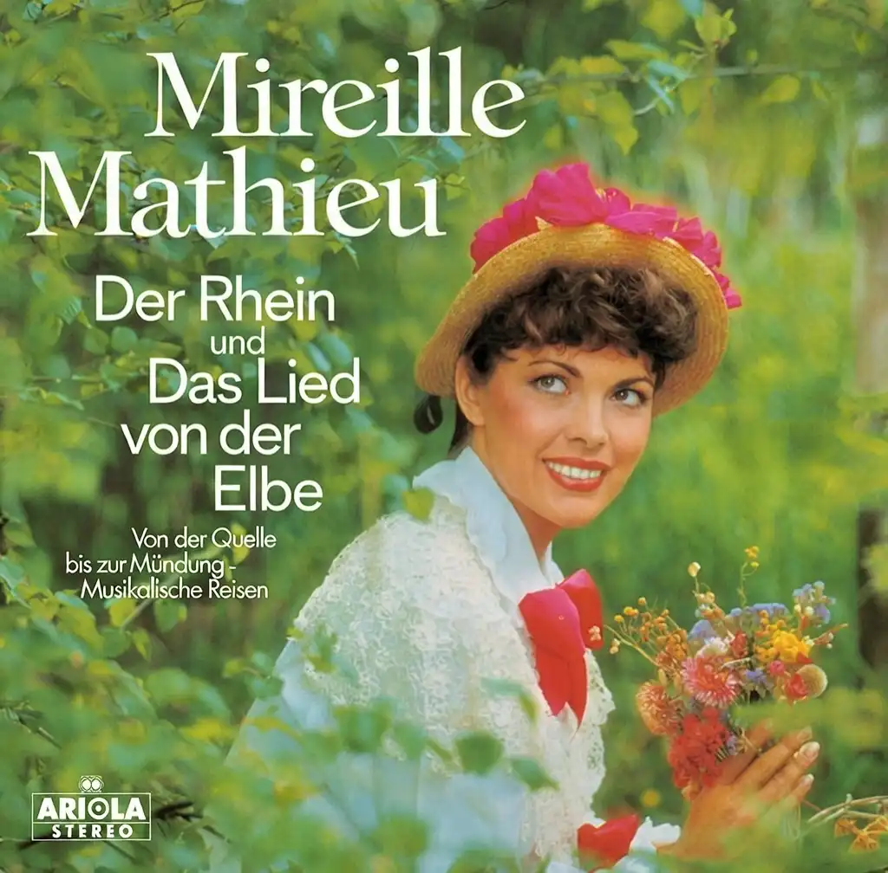

Mireille Mathieu

Ober- und Mittelrhein
Zwischen Schwarzwald und Vogesen,
Ist das Land so weit -
Und die Stadt der Nibelungen -
Bilder der Vergangenheit
Burgen stehen an hohen Ufern -
Im tiefen Keller fließt der goldene Wein
Bunte Schiffe und frohe Lieder –
Und dann ist Karneval in Köln am Rhein
Tanz mit mir, tanz mit mir,
Tanz den nächsten Tanz mit mir
Tanz mit mir, tanz mit mir,
Tanz im Lichterglanz mit mir
Einmal nur, einmal nur
Sind wir zwei so jung wie heut
Tanz mit mir, tanz mit mir
In die Seligkeit
Wunderbar, wunderschön,
Wie sich schon die Lampen drehen
Wunderbar, wunderschön,
Dich nur immer anzusehen
Du und ich, ich und du,
Schau, nun kommt das Glück dazu
Märchentraum, wunderschön,
Nie sollst du vergehen
Ringsherum, her und hin
Spürst du, wie verliebt ich bin
Ringsherum, hin und her,
Dreht sich bunt ein Sternenmeer
Schweben wir aus dem Haus -
Fliegen in die Nacht hinaus
Tanz mit mir ganz allein
Heut im Mondenschein
Tanz mit mir, tanz mit mir
Durch den blauen Morgenwind
Tanz mit mir, tanz mit mir,
Tanz, bis wir zu Hause sind
Dann zum Schluß vor der Tür
Noch ein süßer Kuß von dir
Das war gut, das war schön,
Ciao, auf Wiedersehn
Das war gut, das war schön,
Ciao, auf Wiedersehn.